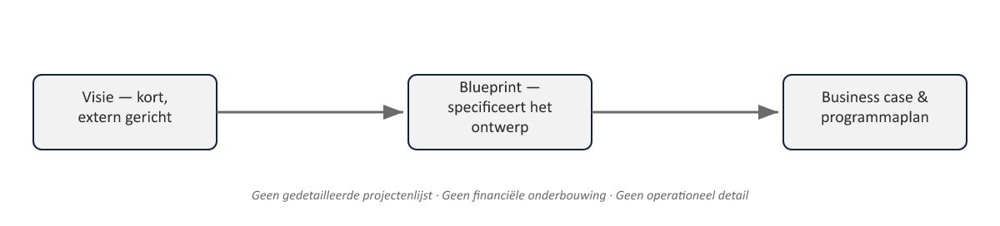
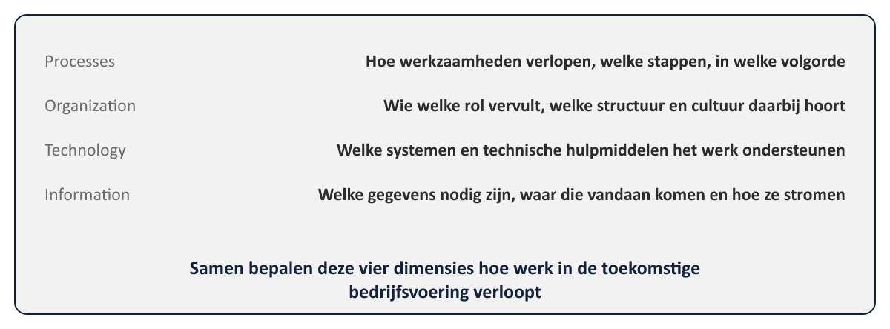
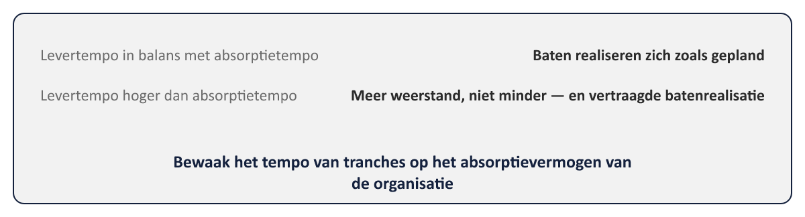

Sheet 1Titel
Project- en Programmamanagement
Niveau 2 · Deel 15: Design en Structure
Sheet 2Het "wat" en het "hoe gefaseerd"
Design: het toekomstbeeld
Structure: hoe dat toekomstbeeld stapsgewijs wordt gerealiseerd
Sheet 3De visie
Kort, extern gericht, aansprekend
Geen projectdetail, geen financiën, geen operationeel detail
“Werkgevers regelen hun mutaties zelf, digitaal en foutloos…”
Sheet 4Visie lijnt uit, blueprint specificeert

Sheet 5De blueprint: target operating model

Processes · Organization · Technology · Information
Sheet 6De gap-analyse
Huidig operating model (as-is) vs. target operating model (to-be)
Het verschil bepaalt de benodigde business changes
Sheet 7De blueprint is geen momentopname
Herzien bij elke tranche
Soms met expliciete tussenliggende staat
Sheet 8Structure: wat is een tranche?
Geen willekeurige opdeling
Een groep projecten rond een duidelijke stapverandering in capaciteit en baten
Sheet 9Waarom niet alles ineens?
- Leren en aanpassen (deal with ambiguity)
- Tempo én waarde tegelijk (bring pace and value)
- Absorptievermogen van de organisatie
Sheet 10Absorptievermogen
Tempo van levering moet in balans met tempo van adoptie
Te snel leveren → meer weerstand, niet minder

Sheet 11Twee kernproducten
Programme Plan — volgt voortgang over de hele looptijd
Projects Dossier — lijst van projecten om de blueprint te realiseren
Sheet 12De Tranche Review
Formeel beslismoment vóór de volgende tranche
Terugkijken (geleverd? baten zichtbaar?) én vooruitkijken (blueprint nog steeds juist?)
→ Evaluate New Information (deel 11) + vier besluiten (deel 13)
Sheet 13Toegepast: blueprint Programma Mutatieplatform
| Dimensie | Invulling voor het Programma Mutatieplatform |
|---|---|
| Processes | Werkgevers dienen mutaties zelf in via het portaal; Klantcontact behandelt alleen uitzonderingen |
| Organization | Een kleiner, meer gespecialiseerd team bij Klantcontact, gericht op complexe gevallen in plaats van volume |
| Technology | Het vernieuwde werkgeversportaal, de nieuwe kernsysteemkoppeling |
| Information | Gevalideerde mutatiegegevens bij invoer, in plaats van correcties achteraf |
Sheet 14Toegepast: tranche-indeling
Tranche 1: kernsysteemkoppeling + validatieregels (basis)
Tranche 2: WGP 2.0 + interne automatisering
Tranche 3: training en verandering (bewust laatst)
Sheet 15Vooruitblik
Deel 16: PRINCE2 Agile en hybride levering — wanneer (delen van) tranches iteratief worden uitgevoerd